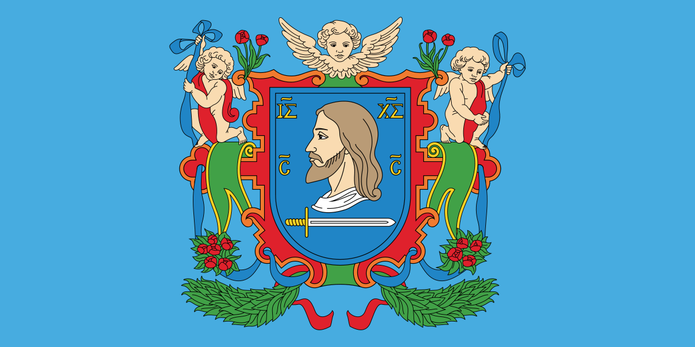
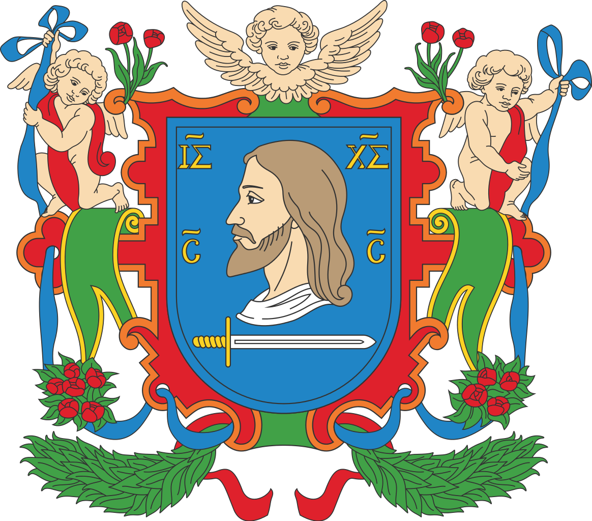

Геральдика Витебска

Флаг Витебска
Флаг Витебска утверждён указом Президента Республики Беларусь № 277 от 2 июня 2009 года.
Представляет собой прямоугольное полотнище с соотношением сторон 1:2, в центре лицевой
стороны которого размещено изображение герба Витебска.
>
Витебск - один из древнейших городов Республики Беларусь, самый северный областной город,
крупный административный, промышленный и культурный центр. Согласно Витебской летописи,
написанной мещанами Панцирным и Аверкой, в 974 году город основала Киевская княгиня Ольга.
Территория города составляет более 12 тысяч га.

Герб Витебска
История герба
В основе Герба современного Витебска – первоначальный вариант Герба Витебска, известный еще с 1597 года.
Если быть точным, это профиль Иисуса Христа, изображенный на голубом поле испанского щита. Изучая символику
Герба, можно сказать, что в нем отражена как религиозная (образ Иисуса Христа), так и оборонительная
(обнаженный меч) сущность. Анализируя историю Витебска, очевидно, что в Гербе вместе с любовью к родному
городу, его истории заложено чувство глубокого патриотизма и рыцарского самосознания. Доминантный голубой
цвет является символом величия, верности, безупречности, а также подчеркивает движение вперед, навстречу
мечтам и надеждам.
Образ Христа обращен вправо, а вверху – справа и слева – нанесены буквы "IS" и "XS" с титлами. Кроме того,
буквы с титлами нанесены и в нижней части щита. Внизу, под образом Спасителя, размещен обнаженный серебряный
меч с золоченой рукоятью, направленный острием влево. Цвет золота и серебра выбран неспроста – это неоспоримые
символы чистосердечности, искренности, благородства, самостоятельности, милосердия и смирения.